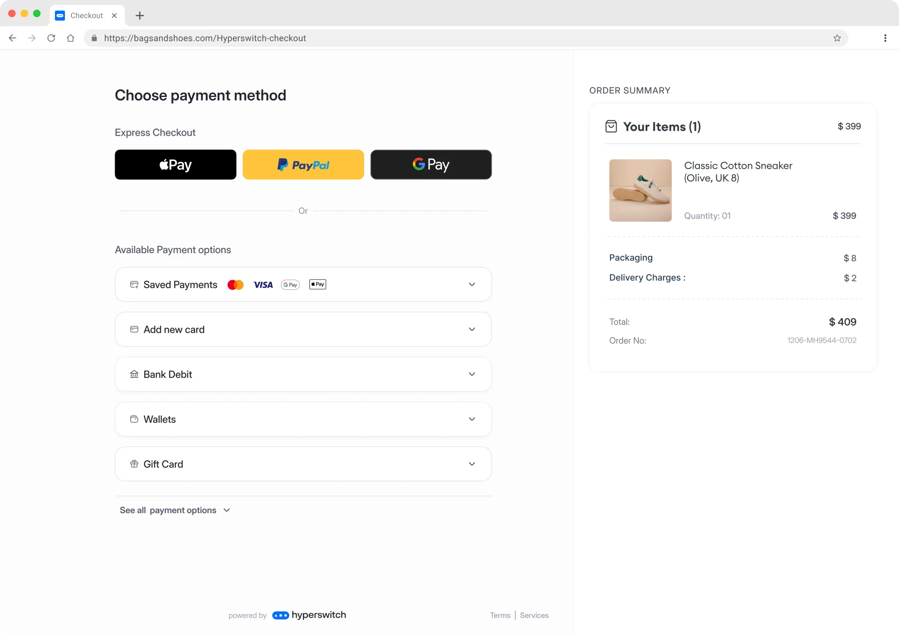
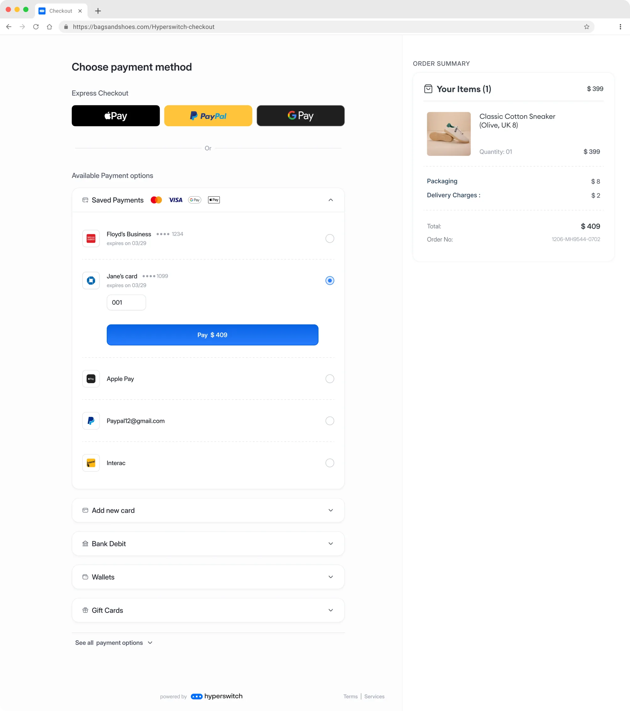
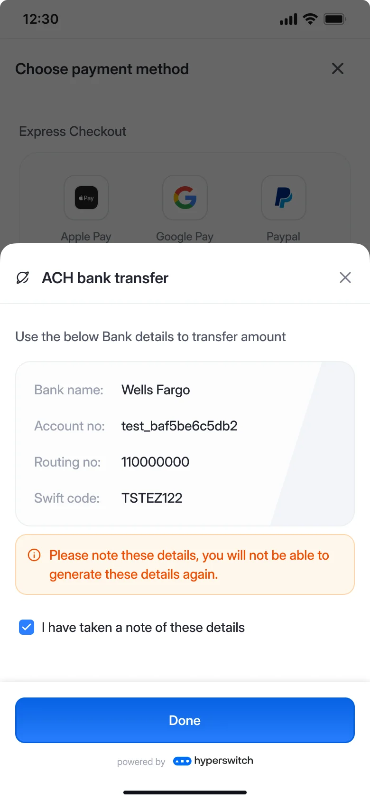

Web + mobile, three ways
Lab page. The same three screen pairs (default, saved payments, ACH bank transfer) shown three different ways. The phone uses Up-skill's mockup. The web screen is cropped to one browser shape so tall pages don't stretch the layout.
Direction A
Corner overlap
The phone steps over the browser's bottom-right corner. The browser stays the hero; the phone reads as "and on mobile".







Direction B
Phone in front
The browser fills the stage and the phone stands over its order summary, the part of the page that matters least here.
Direction C
Staggered
The phone leads on the left and the browser sits behind it, set back and lower. More editorial, gives mobile equal weight.